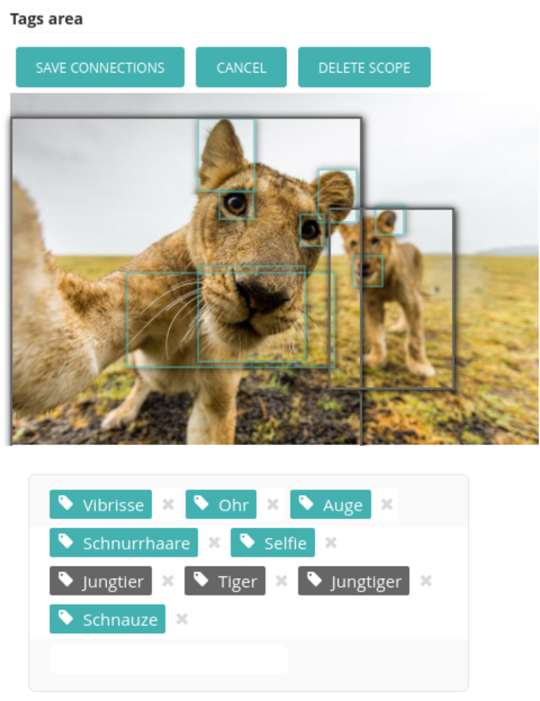
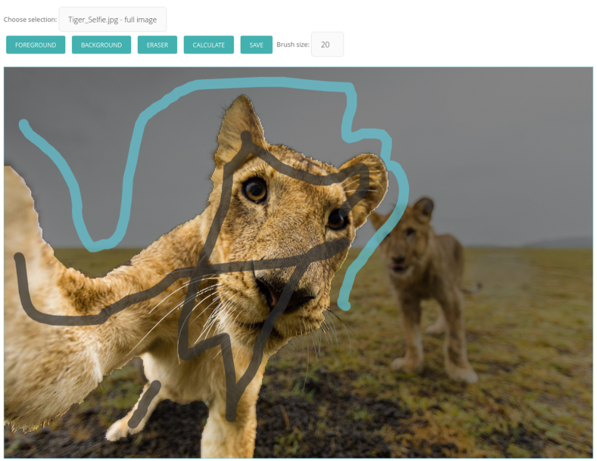

Erweiterungen¶
Die zwei neuen Hauptfeatures - die multiple Objektauswahl und die Bildsegmentierung - wurden in die herkömmliche Wagtailoberfläche eingepflegt. Entweder wurden Benutzerinterfaces der herkömlichen cropping Funktion übernommen oder eigene hinzugefügt. Dabei wurden die Javascriptbibliotheken Jcrop für die Objektauswahl und Konva zur Bildauswahl in der Bildsegmentierung genutzt.
Multiple Objektauswahl¶
Für die Mehrfachauswahl von Objekten und der Zuweisung zu multiplen Tags wurde das edit.html Template überschrieben. Dies beinhaltet das Laden von externen Javascript und CSS Dateien wie wagtailtagging.css und wagtailtagging.js sowie eine erweiterte Speicherform und das Laden der alten Objekt-Tag-Zuweisungen mit zugehörigen Metadaten
Wagtailtagging.js¶
In wagtailtagging.js wurden Funktionen und Hilfsfunktionen gebündelt, die die Steuerung als auch die korrekte Umrechnung der Bildpunkte ermöglicht. Das Hauptdatenobjekt in der Speicherung und Kommunikation mit dem Server stellt die json_message dar:
var json_message = {"create":{}, "delete":[], "alter":[]};
Dieses JSON-Objekt
Models.py¶
Objektsegmentierung¶
halbautomatische Bildsegmentierung mittels openCV
